The DSA Newscast
From March of 11B9z (2013d) through November 1205z (2021d), the DSA published The DSA Newscast, a (mostly) monthly newsletter, for the benefit of its members. It typically consisted of a feature article, dozenal news, Society business, and a poetical diversion. Each Newscast issue would initially be available only for members via e-mail; once a new issue was published to members, the prior issue would be posted here.
Note: These newsletters have been left unedited from their original content, and unfortunately they now contain many obsolete URLs. However, where possible, updated URLs are provided in the issue summary pages here, which you can link to by clicking on the issue titles below. In particular:
- The DozensOnline forum was migrated from hosting on Invisionfree to hosting on Tapatalk. The old Invisionfree URLs no longer exist and unfortunately will now connect you to questionable content. Wherever a Newscast issue linked to an Invisionfree URL, its issue summary page now provides the equivalent Tapatalk URL.
- External links to other sites have occasionally gone extinct, but often could still be found archived at Wayback Machine.
Volume 9
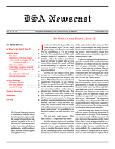 Click to view PDF |
Title: The DSA Newscast, Vol. 9 Iss. 1 Date: 1 November 1205z (2021d) Editor: Donald Goodman III Featured Article: “So What’s the Point?”, Part II; Our Hiatus; New Series of Dozenal Videos; Medium: “Life Would Be Simpler If We Counted in Base 12”; More Dozenal Dice; Scale Name Tradition: Dozenal; Dozenal RPN Calculator for Android; Unicode Sponsorship; Poetical Diversion: “Quoth the Dozen: Nevermore” |
Volume 8
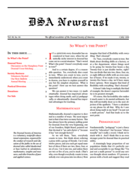 Click to view PDF |
Title: The DSA Newscast, Vol. 8 Iss. 4 Date: 1 July 1204z (2020d) Editor: Donald Goodman III Featured Article: “So What’s the Point?”; discussion on the Humphrey point; dozenal cross-stitching; Poetical Diversion: “The Dozen, Part II.” |
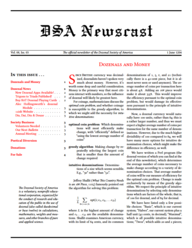 Click to view PDF |
Title: The DSA Newscast, Vol. 8 Iss. 3 Date: 1 June 1204z (2020d) Editor: Donald Goodman III Featured Article: Dozenals and Money; new dozenal apps available, on F-Droid; Troy’s Trigons to Triads published; dozenal playing cards for sale from K6T; Alec Hollingsworth’s dozenal module for Coffeescript; the 12ish website; “Dis, Dat, Di & Douze” at That’s Math; Poetical Diversion: “The Dozen, Part I.” |
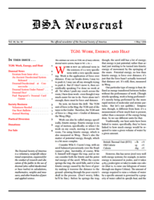 Click to view PDF |
Title: The DSA Newscast, Vol. 8 Iss. 2 Date: 1 May 1204z (2020d) Editor: Donald Goodman III Featured Article: TGM: Work, Energy, and Heat; Williams’s An Ancient Duodecimal System released; dozenal dice; Paul Rapoport’s dozen card games; Poetical Diversion: “The Potters’ Play” |
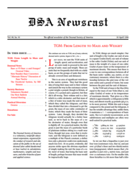 Click to view PDF |
Title: The DSA Newscast, Vol. 8 Iss. 1 Date: 10z April 1204z (12d April 2020d) Editor: Donald Goodman III TGM: From Length to Mass and Weight; a new dozenal video; new number-base converters; The Duodecimal System, by Bill Benson; Poetical Diversion: “Dozens” |
Volume 7
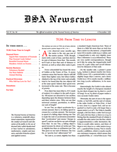 Click to view PDF |
Title: The DSA Newscast, Vol. 7 Iss. 4 Date: 4 December 1203z (2019d) Editor: Donald Goodman III Featured Article: TGM: From Time to Length; Poetical Diversion: “Who has Need of Five?”; new dozenal animation; dozenal cards online; dozenal music; Mundezo article on dozenal; Poetical Diversion: “Who Still Has Love for Ten?” |
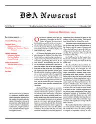 Click to view PDF |
Title: The DSA Newscast, Vol. 7 Iss. 3 Date: 5 November 1203z (2019d) Editor: Donald Goodman III Featured article: “Annual Meeting, 1203z (2019d)”; Unicode and Dozens; Building an American Flag in Dozenal; Poetical Diversion: “Who has Need of Five?” |
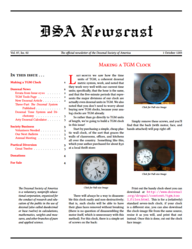 Click to view PDF |
Title: The DSA Newscast, Vol. 7 Iss. 2 Date: 1 October 1203z (2019d) Editor: Donald Goodman III Featured article: “Making a TGM Clock”; errata from Vol. 7 Iss. 1; a new dozenal article by Akash Peshin; a three-part article on dozenal published; TGM Tools page now available; a dozenal tone system and dichotomy; and a new dozenal calculator; Poetical Diversion: “Great Twelve”. |
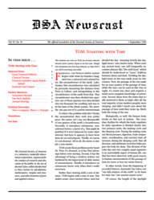 Click to view PDF |
Title: The DSA Newscast, Vol. 7 Iss. 1 Date: 1 September 1203z (2019d) Editor: Donald Goodman III Featured article: “TGM: Starting with Time”; some great dozenal publicity on the BBC; a new dozenal article, in Latin, by Brennus Legranus; dozenal calendars republished, including print-yourself versions for letter-size paper and A4; dozenal card games; Annual Meeting for 1203z (2019d). Poetical Diversion: “Two’s Company, Three’s a Triangle”. |
Volume 6
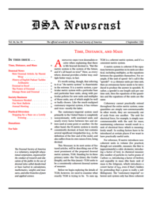 Click to view PDF |
Title: The DSA Newscast, Vol. 6, Iss. 5 Date: 2 September 1202z (2018d) Editor: Donald Goodman III Featured article: “Time, Distance, and Mass”. A new dozenal article by Naomi Wray; History of English Podcast tackles arithmetic; Dozenal in Microsoft Excel; Kousik’s dozenal article; the Ishango bone and dozenal; DSA Annual Meeting for 1202z (2018d). Poetical Diversion: “Stopping by a Base on a Lovely Evening”. |
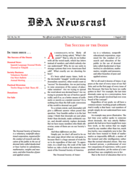 Click to view PDF |
Title: The DSA Newscast, Vol. 6, Iss. 4 Date: 1 August 1202z (2018d) Editor: Donald Goodman III Featured article: “The Success of the Dozen”; Spanish language dozenal works; dozenal in Volapük; location of our annual meeting. Poetical Diversion: “Twelve Rings to Rule Them All.” |
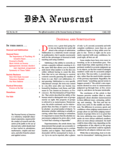 Click to view PDF |
Title: The DSA Newscast, Vol. 6, Iss. 3 Date: 1 July 1202z (2018d) Editor: Donald Goodman III Featured article: “Dozenal and Subitization”; Erik Engheim’s dozenal articles; dozenal in Braille; Curiosity on dozenal; Antiquitatem on dozenal; Symmetry in Times Tables; our Paypal donations work again; Poetical Diversion: “Dozens at the Bat”. |
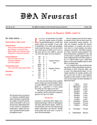 Click to view PDF |
Title: The DSA Newscast, Vol. 6, Iss. 2 Date: 9 June 1202z (2018d) Editor: Donald Goodman III Featured article: “Back to Basics: SDN, cont’d”; Basic Dozenal Arithmetic published; Igor Bushyn on Dozenal Time; Eddie’s Math and Calculator Blog; Ideophilus on Dozenal numerals; Poetical Diversion: Two Limericks Concerning Twelve. |
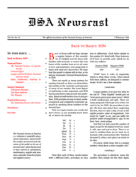 Click to view PDF |
Title: The DSA Newscast, Vol. 6, Iss. 1 Date: 2 February 1202z (2018d) Editor: Donald Goodman III Featured article: “Back to Basics: SDN”; puzzlewocky; dozenal quiz; upcoming book; release of our first video; Poetical Diversion: “The Mind that Knows the Dozen”. |
Volume 5
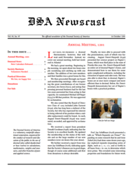 Click to view PDF |
Title: The DSA Newscast, Vol. 5, Iss. 7 Date: 16z October 1201z (18d October 2017d) Editor: Donald Goodman III Featured article: “Annual Meeting, 1201z (2017d)”; release of new 1202z (2018d) calendars; Poetical Diversion: “We few, we happy few”. |
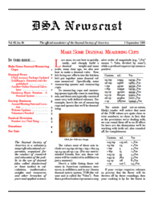 Click to view PDF |
Title: The DSA Newscast, Vol. 5, Iss. 6 Date: 1 September 1201z (2017d) Editor: Donald Goodman III Featured article: “Make Some Dozenal Measuring Cups”; publication of Schiffman’s Personalities; website updates; another online dozenal calculator; Hamburg Music Notation; Poetical Diversion: “The Eclipse”. |
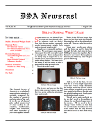 Click to view PDF |
Title: The DSA Newscast, Vol. 5, Iss. 5 Date: 1 August 1201z (2017d) Editor: Donald Goodman III Featured article: “Build a Dozenal Weight Scale”; publication of The Duodenary Scale; website updates; Poetical Diversion: “Number is a Vital Thing”. |
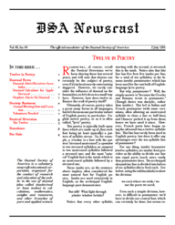 Click to view PDF |
Title: The DSA Newscast, Vol. 5, Iss. 4 Date: 2 July 1201z (2017d) Editor: Donald Goodman III Featured article: “Twelve in Poetry”; dozenal calculator for Apple devices; annual meeting for 1201z (2017d) announced; Poetical Diversion: “The Twelve”. |
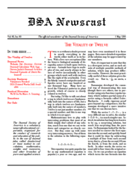 Click to view PDF |
Title: The DSA Newscast, Vol. 5, Iss. 3 Date: 1 May 1201z (2017d) Editor: Donald Goodman III Featured article: “The Vitality of Twelve”; links; dozenal calculator web app; dozenal episode of the Digits podcast; Poetical Diversion: “We’ll Go No More A-Tenning”. |
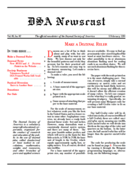 Click to view PDF |
Title: The DSA Newscast, Vol. 5, Iss. 2 Date: 5 February 1201z (2017d) Editor: Donald Goodman III Featured article: “Make a Dozenal Ruler” Poetical Diversion: “There is another base” |
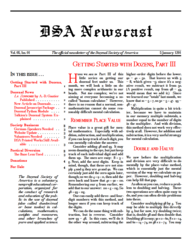 Click to view PDF |
Title: The DSA Newscast, Vol. 5, Iss. 1 Date: 5 January 1201z (2017d) Editor: Donald Goodman III Featured article: “Getting Started with Dozens, Part III”; publication of La Zonnomie; dozenal packages for Javascript and Python; Poetical Diversion: “The Base Less Used”. |
Volume 4
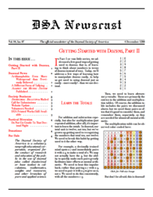 Click to view PDF |
Title: The DSA Newscast, Vol. 4, Iss. 7 Date: 4 December 1200z (2016d) Editor: Donald Goodman III Featured article: “Getting Started with Dozens, Part II”; arithmophobia; dozenal tallying; publication of Against the Metric System; Poetical Diversion: “Do Not Go Gentle to the Decimal Night”. |
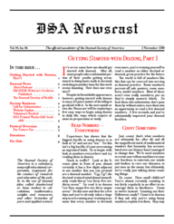 Click to view PDF |
Title: The DSA Newscast, Vol. 4, Iss. 6 Date: 2 November 1200z (2016d) Editor: Donald Goodman III Featured article: “Getting Started with Dozens, Part I”; Digits podcast; Poetical Diversion: “For Future Use” (from the DSGB Duodecimal Newscast). |
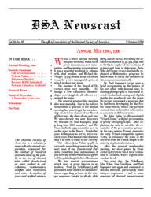 Click to view PDF |
Title: The DSA Newscast, Vol. 4, Iss. 5 Date: 7 October 1200z (2016d) Editor: Donald Goodman III Featured article: “Annual Meeting, 1200z (2016d)”; publication of the revised MODS and A Dozenal Primer; Poetical Diversion: “A Dozenalist, to His Love”. |
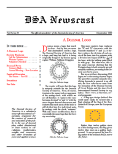 Click to view PDF |
Title: The DSA Newscast, Vol. 4, Iss. 4 Date: 1 September 1200z (2016d) Editor: Donald Goodman III Featured article: “A Dozenal Logo”; ternary math in baseball; Poetical Diversion: “The Dozen—Part III”. |
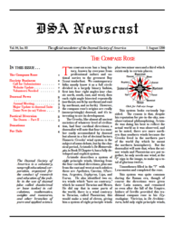 Click to view PDF |
Title: The DSA Newscast, Vol. 4, Iss. 3 Date: 1 August 1200z (2016d) Editor: Donald Goodman III Featured article: “The Compass Rose”; major update to the dozenal suite; new dozenal videos; Poetical Diversion: “The Dozen—Part II”. |
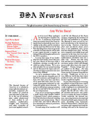 Click to view PDF |
Title: The DSA Newscast, Vol. 4, Iss. 2 Date: 1 July 1200z (2016d) Editor: Donald Goodman III Featured article: “And We’re Back!”; dozenal clock app for Macs; annual meeting for 1200z (2016d) announced for Atlanta, GA; Poetical Diversion: “The Dozen—Part I”. |
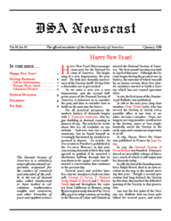 Click to view PDF |
Title: The DSA Newscast, Vol. 4, Iss. 1 Date: 1 January 1200z (2016d) Editor: Donald Goodman III Featured article: “Happy New Year!”; Poetical Diversion: Yet another “Auld Lang Syne”. |
Volume 3
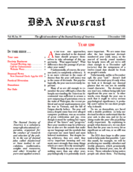 Click to view PDF |
Title: The DSA Newscast, Vol. 3, Iss. 10z Date: 2 December 11BBz (2015d) Editor: Donald Goodman III Featured article: “Year 1200z (2016d)”; Paul Rapoport’s dozenal clock app for iOS; Poetical Diversion: “A Limerick.” |
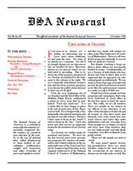 Click to view PDF |
Title: The DSA Newscast, Vol. 3, Iss. Az Date: 2 October 11BBz (2015d) Editor: Donald Goodman III Featured article: “Educating in Dozens”; publication of Mathamerica; Poetical Diversion: “Dō! Dō! Dō!” by Gene Zirkel. |
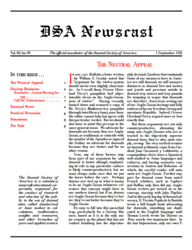 Click to view PDF |
Title: The DSA Newscast, Vol. 3, Iss. 9 Date: 1 September 11BBz (2015d) Editor: Donald Goodman III Featured article: “The Neutral Appeal”; dozenal primes table; dozenal comic; Poetical Diversion: “It is the east; the Dozen is the Sun”. |
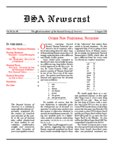 Click to view PDF |
Title: The DSA Newscast, Vol. 3, Iss. 8 Date: 2 August 11BBz (2015d) Editor: Donald Goodman III Featured article: “Other Non-Positional Notation”; publication of Practical Polygons; links; Poetical Diversion: “An Ode to Three”. |
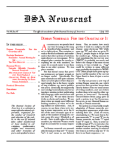 Click to view PDF |
Title: The DSA Newscast, Vol. 3, Iss. 7 Date: 1 July 11BBz (2015d) Editor: Donald Goodman III Featured article: “Doman Numerals: For the Gravitas of It”; Unicode accepts Pitman numerals; publication of Collected Works on Reckoning Reform; update of Multiplication Tables of Various Bases; Poetical Diversion: “You may talk o’ two and five”. |
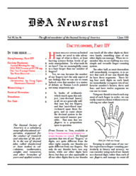 Click to view PDF |
Title: The DSA Newscast, Vol. 3, Iss. 6 Date: 1 June 11BBz (2015d) Editor: Donald Goodman III Featured article: “Dactylonomy, Part IIVz”; announcement of 11BBz (2015d) annual meeting; memorizing pi; Poetical Diversion: “Dozenal Limericks”. |
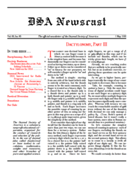 Click to view PDF |
Title: The DSA Newscast, Vol. 3, Iss. 5 Date: 1 May 11BBz (2015d) Editor: Donald Goodman III Featured article: “Dactylonomy, Part III”; publication of The Duodecimal System of Notation; dozenal image by Sean Hartung; Poetical Diversion: “As once man huddled in the dark”. |
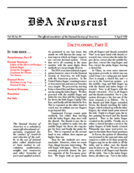 Click to view PDF |
Title: The DSA Newscast, Vol. 3, Iss. 4 Date: 3 April 11BBz (2015d) Editor: Donald Goodman III Featured article: “Dactylonomy, Part II”; resignation of Michael deVlieger as Editor of the Bulletin; transition to Pitman numerals debated between Gene Zirkel (for Dwiggins) and Donald Goodman (for Pitman); publication of Rationality, by Troy; Poetical Diversion: “To Decimal, going to the Wars”. |
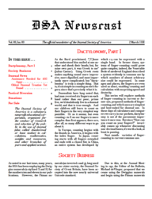 Click to view PDF |
Title: The DSA Newscast, Vol. 3, Iss. 3 Date: 1 March 11BBz (2015d) Editor: Donald Goodman III Featured article: “Dactylonomy, Part I” publication of oldest dozenal treatise yet found, De Arithmetica by Ioannis Caramuelis (Juan Caramuel y Lobkowitz); Poetical Diversion: “To Twelve or not to Twelve.” |
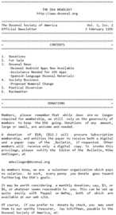 Click to view text |
Title: The DSA Newscast, Vol. 3, Iss. 2 Date: 3 February 11BBz (2015d) Editor: Donald Goodman III Announcement of DozclockWidget, dozbc, and TGMDroid, for the Android operating system, available on Google Play; p ublication of first Spanish-language documents, Filosofía de la numeración and De la numeración que debe preferirse; links; Poetical Diversion: An extended dozenal “Auld Lang Syne”. |
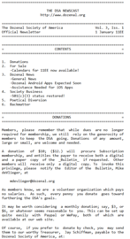 Click to view text |
Title: The DSA Newscast, Vol. 3, Iss. 1 Date: 1 January 11BBz (2015d) Editor: Donald Goodman III Restoration of DSA’s 501(c)(3) status; links; Poetical Diversion: A dozenal “Auld Lang Syne”. |
Volume 2
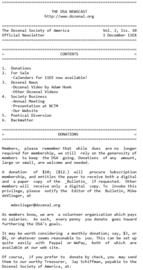 Click to view text |
Title: The DSA Newscast, Vol. 2, Iss. 10z Date: 1 December 11BAz (2014d) Editor: Donald Goodman III Adam Hoek’s dozenal video; other dozenal videos; links; publication of A Duodecimal Scale; Poetical Diversion: “Bless My Homework Forever”, by Gene Zirkel. |
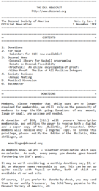 Click to view text |
Title: The DSA Newscast, Vol. 2, Iss. Bz Date: 1 November 11BAz (2014d) Editor: Donald Goodman III
The sum of all positive integers = −0.1z; an online encyclopedia of mathematical proofs; Poetical Diversion: “Dozenal, Dozenal”. |
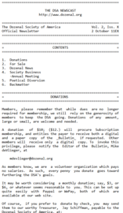 Click to view text |
Title: The DSA Newscast, Vol. 2, Iss. Az Date: 2 October 11BAz (2014d) Editor: Donald Goodman III Another dozenal pi setting by Jim Zamerski; Tolkien’s elves and the dozen; Poetical Diversion: “The Ten It Would Not Stop for Three”. |
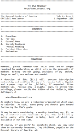 Click to view text |
Title: The DSA Newscast, Vol. 2, Iss. 9 Date: 1 September 11BAz (2014d) Editor: Donald Goodman III More on Michael deVlieger’s sequences in the OEIS; Poetical Diversion: “Two Roads Diverged in a Yellow Wood”. |
Click to view text |
Title: The DSA Newscast, Vol. 2, Iss. 8 Date: 5 August 11BAz (2014d) Editor: Donald Goodman III News on annual meeting and NCTM conference; Poetical Diversion: “Rode the Brave Dozen”. |
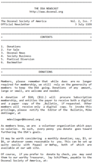 Click to view text |
Title: The DSA Newscast, Vol. 2, Iss. 7 Date: 3 July 11BAz (2014d) Editor: Donald Goodman III Mike deVlieger’s sequences accepted into OEIS; Poetical Diversion: “Cheaper by the Dozen”. |
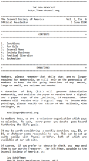 Click to view text |
Title: The DSA Newscast, Vol. 2, Iss. 6 Date: 2 June 11BAz (2014d) Editor: Donald Goodman III Jim Zamerski’s dozenal pi set to music; Poetical Diversion: “Bring Back My Dozen to Me”. |
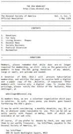 Click to view text |
Title: The DSA Newscast, Vol. 2, Iss. 5 Date: 1 May 11BAz (2014d) Editor: Donald Goodman III Featured article: “Living Dozens: Shapes”; publication of A Rational Solution to the Problem of Weights and Measures; Poetical Diversion: “From Doz’nalism in Glory”. |
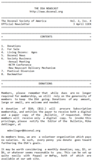 Click to view text |
Title: The DSA Newscast, Vol. 2, Iss. 4 Date: 3 April 11BAz (2014d) Editor: Donald Goodman III Featured article: “Living Dozens: Ages”; publication of Twelve vs. Ten; Poetical Diversion: “Twelve’s My Number.” |
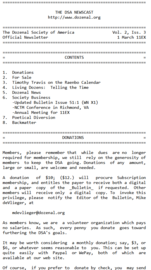 Click to view text |
Title: The DSA Newscast, Vol. 2, Iss. 3 Date: 1 March 11BAz (2014d) Editor: Donald Goodman III Featured article: “Living Dozens: Telling the Time”; publication of Twelve vs. Ten; Poetical Diversion: “Eldorado Revisited.” |
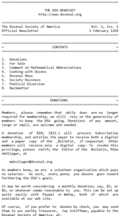 Click to view text |
Title: The DSA Newscast, Vol. 2, Iss. 2 Date: 1 February 11BAz (2014d) Editor: Donald Goodman III Featured article: “Cooking with Dozens” publication of Systematic Dozenal Nomenclature; Poetical Diversion: “Where Does Cinderella Go? by H. C. Churchman. |
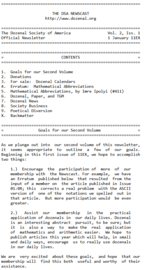 Click to view text |
Title: The DSA Newscast, Vol. 2, Iss. 1 Date: 1 January 11BAz (2014d) Editor: Donald Goodman III Featured article: “Our Goals for Our Second Volume”; “Dozenal Paper and TGM”; links; Poetical Diversion. |
Volume 1
Click to view text |
Title: The DSA Newscast, Vol. 1, Iss. Az Date: 1 December 11B9z (2013d) Editor: Donald Goodman III Featured article: “Reflections on Our First Year”, “Numerical Abbreviations for Fun and Profit”; links; Poetical Diversion: “Ode of a Young Decimalist on Discovering the Dozen.” |
Click to view text |
Title: The DSA Newscast, Vol. 1, Iss. 9 Date: 1 November 11B9z (2013d) Editor: Donald Goodman III Featured article: “SDN and Fractions”; links; publication of Playfair on Dozenalism; Poetical Diversion: Coleridge’s “A Mathematical Problem”; Bernoulli’s “Treatise on an Infinite Series.” |
Click to view text |
Title: The DSA Newscast, Vol. 1, Iss. 8 Date: 1 October 11B9z (2013d) Editor: Donald Goodman III Featured article: “SDN for Word Construction”; links; publication of Leclerc sur Douzainisme; Poetical Diversion. |
Click to view text |
Title: The DSA Newscast, Vol. 1, Iss. 7 Date: 1 September 11B9z (2013d) Editor: Donald Goodman III Featured article: “Using SDN”; hard-copy of the TGM book now available; publication of Nystrom’s Duodenal System; publication of Laplace sur Douzainisme; Poetical Diversion: Freeman’s “Let us then be up and doing”. |
Click to view text |
Title: The DSA Newscast, Vol. 1, Iss. 6 Date: 1 August 11B9z (2013d) Editor: Donald Goodman III Featured article: “Systematic Dozenal Nomenclature, In Brief”; links; Poetical Diversions: “One, Two, Buckle My Shoe”; “Over in the Meadow”; “The Ants Go Marching”; “Twelve Little Aeroplanes” |
Click to view text |
Title: The DSA Newscast, Vol. 1, Iss. 5 Date: 1 July 11B9z (2013d) Editor: Donald Goodman III Release of the Anki deck for studying dozenal facts; review of 11B9z (2013d) annual meeting and presentation at the ASEE conference; DSA Annual Award given to Jen Seron; Poetical Diversion: The Number Rhyme. |
Click to view text |
Title: The DSA Newscast, Vol. 1, Iss. 4 Date: 1 Jun 11B9z (2013d) Editor: Donald Goodman III Links; request for updated member information; Poetical Diversion: “O Dozen, My Dozen”. |
Click to view text |
Title: The DSA Newscast, Vol. 1, Iss. 3 Date: 1 May 11B9z (2013d) Editor: Donald Goodman III Links; publication of Systems of Numeration: A Plea for the Duodecimal; release of KDE Desktop Dozenal Clock; Poetical Diversion: “To Dozenal Patriots, An Anthem”. |
Click to view text |
Title: The DSA Newscast, Vol. 1, Iss. 2 Date: 2 April 11B9z (2013d) Editor: Donald Goodman III Announcement of the 11B9z (2013d) annual meeting; publication of Boxes and Cans and Dozens vs. Tens; Dozenal Pi Day 11B9z (2013d); Poetical Diversion: “A Dozenalist, to the Number Ten”. |
Click to view text |
Title: The DSA Newscast, Vol. 1, Iss. 1 Date: 7 March 11B9z (2013d) Editor: Donald Goodman III Announcement of the Newscast; news concerning the 12/12/12d hoopla; links. |